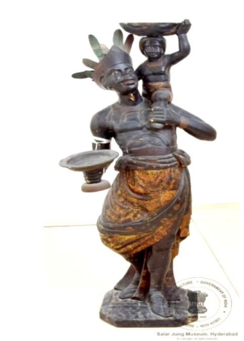

1. एक बच्चे को गोद में लिए हुए पुरुष

अभिलेख संख्या: LXXII-5
फ्रांसीसी, अफ्रीकी मूर्ति — एक पुरुष अपने बाएँ कंधे पर अपने बच्चे को उठाए हुए है और दाएँ हाथ में फल से भरी थाली पकड़े हुए है। उसने अपना दायाँ पैर थोड़ा पीछे की ओर मोड़ा हुआ है। उसके छोटे परिधान को सुनहरे रंग से सजाया गया है और उसके सिर पर पत्तेदार किनारे वाला मुकुट (माला) है। उसने कमर के नीचे पीले रंग का वस्त्र पहना हुआ है। उसके बाएँ कंधे पर बैठे बच्चे के सिर पर एक गोल छोटी टोकरी है और बच्चे ने भी पीले रंग का वस्त्र पहना हुआ है। यह मूर्ति लकड़ी से बनी है। इसका उद्गम फ्रांस से हुआ है और यह 19वीं शताब्दी की है।
1. Man Carrying a Child
🔇 Is bhasha me audio uplabdh nahi hai.
Acc No: LXXII-5
A French African figure — a man carries his child on his left shoulder and holds a platter of fruit in his right hand. His right leg is bent slightly backwards. His short garment is decorated in gold and he wears a crown (wreath) with a leafy border on his head. Below the waist he wears a yellow cloth. The child seated on his left shoulder carries a small round basket on its head and is dressed in yellow as well. The figure is made of wood. It originates from France and dates to the 19th century.
1. బిడ్డను ఎత్తుకున్న పురుషుడు
🔇 Is bhasha me audio uplabdh nahi hai.
Acc No: LXXII-5
ఫ్రెంచ్ ఆఫ్రికన్ శిల్పం — ఒక పురుషుడు తన ఎడమ భుజంపై బిడ్డను ఎత్తుకుని, కుడి చేతిలో పండ్లతో నిండిన పళ్ళెం పట్టుకుని ఉన్నాడు. అతని కుడి కాలు కొద్దిగా వెనుకకు వంగి ఉంది. అతని పొట్టి వస్త్రం బంగారు రంగుతో అలంకరించబడింది మరియు తలపై ఆకుల అంచు గల కిరీటం (మాల) ఉంది. నడుము కింద పసుపు రంగు వస్త్రం ధరించాడు. ఎడమ భుజంపై కూర్చున్న బిడ్డ తలపై చిన్న గుండ్రని బుట్ట ఉంది, బిడ్డ కూడా పసుపు రంగు వస్త్రం ధరించి ఉంది. ఈ శిల్పం కలపతో తయారు చేయబడింది. దీని మూలం ఫ్రాన్స్ మరియు ఇది 19వ శతాబ్దానికి చెందినది.
1. بچے کو اٹھائے ہوئے مرد
Acc No: LXXII-5
فرانسیسی افریقی مجسمہ — ایک مرد اپنے بائیں کندھے پر اپنے بچے کو اٹھائے ہوئے ہے اور دائیں ہاتھ میں پھلوں سے بھری تھالی پکڑے ہوئے ہے۔ اس نے اپنا دایاں پاؤں تھوڑا پیچھے کی طرف موڑا ہوا ہے۔ اس کے چھوٹے لباس کو سنہری رنگ سے سجایا گیا ہے اور اس کے سر پر پتوں والے کنارے کا تاج (ہار) ہے۔ اس نے کمر کے نیچے پیلے رنگ کا کپڑا پہنا ہوا ہے۔ اس کے بائیں کندھے پر بیٹھے بچے کے سر پر ایک گول چھوٹی ٹوکری ہے اور بچے نے بھی پیلے رنگ کا کپڑا پہنا ہوا ہے۔ یہ مجسمہ لکڑی سے بنا ہے۔ اس کا تعلق فرانس سے ہے اور یہ 19ویں صدی کا ہے۔
১. শিশুকে কোলে নেওয়া পুরুষ
Acc No: LXXII-5
ফরাসি আফ্রিকান ভাস্কর্য — একজন পুরুষ তাঁর বাঁ কাঁধে নিজের সন্তানকে তুলে ধরেছেন এবং ডান হাতে ফলে ভরা থালা ধরে আছেন। তাঁর ডান পা কিছুটা পিছনের দিকে বাঁকানো। তাঁর ছোট পোশাকটি সোনালি রঙে সাজানো এবং মাথায় পাতার কিনারাযুক্ত মুকুট (মালা) রয়েছে। কোমরের নীচে তিনি হলুদ রঙের বস্ত্র পরেছেন। তাঁর বাঁ কাঁধে বসা শিশুটির মাথায় একটি ছোট গোল ঝুড়ি রয়েছে এবং শিশুটিও হলুদ রঙের বস্ত্র পরে আছে। এই ভাস্কর্যটি কাঠের তৈরি। এটির উৎস ফ্রান্স এবং এটি ঊনবিংশ শতাব্দীর নিদর্শন।
1. બાળકને ઊંચકેલો પુરુષ
Acc No: LXXII-5
ફ્રેન્ચ આફ્રિકન શિલ્પ — એક પુરુષ પોતાના ડાબા ખભા પર પોતાના બાળકને ઊંચકીને ઊભો છે અને જમણા હાથમાં ફળોથી ભરેલી થાળી પકડી છે. તેણે પોતાનો જમણો પગ થોડો પાછળની તરફ વાળેલો છે. તેના ટૂંકા વસ્ત્રને સોનેરી રંગથી શણગારવામાં આવ્યું છે અને તેના માથા પર પાંદડાંવાળી કિનારીવાળો મુકુટ (માળા) છે. કમરની નીચે તેણે પીળા રંગનું વસ્ત્ર પહેર્યું છે. તેના ડાબા ખભા પર બેઠેલા બાળકના માથા પર એક નાની ગોળ ટોપલી છે અને બાળકે પણ પીળા રંગનું વસ્ત્ર પહેર્યું છે. આ શિલ્પ લાકડામાંથી બનેલું છે. તેનું ઉદ્ગમ ફ્રાન્સ છે અને તે 19મી સદીનું છે.
1. ಮಗುವನ್ನು ಎತ್ತಿಕೊಂಡ ಪುರುಷ
Acc No: LXXII-5
ಫ್ರೆಂಚ್ ಆಫ್ರಿಕನ್ ಶಿಲ್ಪ — ಒಬ್ಬ ಪುರುಷ ತನ್ನ ಎಡ ಹೆಗಲ ಮೇಲೆ ತನ್ನ ಮಗುವನ್ನು ಎತ್ತಿಕೊಂಡಿದ್ದಾನೆ ಮತ್ತು ಬಲಗೈಯಲ್ಲಿ ಹಣ್ಣುಗಳಿಂದ ತುಂಬಿದ ತಟ್ಟೆಯನ್ನು ಹಿಡಿದಿದ್ದಾನೆ. ಅವನ ಬಲಗಾಲು ಸ್ವಲ್ಪ ಹಿಂದಕ್ಕೆ ಬಾಗಿದೆ. ಅವನ ಚಿಕ್ಕ ಉಡುಪನ್ನು ಚಿನ್ನದ ಬಣ್ಣದಿಂದ ಅಲಂಕರಿಸಲಾಗಿದೆ ಮತ್ತು ತಲೆಯ ಮೇಲೆ ಎಲೆಗಳ ಅಂಚಿನ ಕಿರೀಟ (ಮಾಲೆ) ಇದೆ. ಸೊಂಟದ ಕೆಳಗೆ ಹಳದಿ ಬಣ್ಣದ ವಸ್ತ್ರವನ್ನು ಧರಿಸಿದ್ದಾನೆ. ಅವನ ಎಡ ಹೆಗಲ ಮೇಲೆ ಕುಳಿತ ಮಗುವಿನ ತಲೆಯ ಮೇಲೆ ಚಿಕ್ಕ ದುಂಡಗಿನ ಬುಟ್ಟಿ ಇದೆ ಮತ್ತು ಮಗುವೂ ಹಳದಿ ಬಣ್ಣದ ವಸ್ತ್ರ ಧರಿಸಿದೆ. ಈ ಶಿಲ್ಪ ಮರದಿಂದ ಮಾಡಲಾಗಿದೆ. ಇದರ ಮೂಲ ಫ್ರಾನ್ಸ್ ಮತ್ತು ಇದು 19ನೇ ಶತಮಾನದ್ದಾಗಿದೆ.
୧. ଶିଶୁକୁ କୋଳରେ ଧରିଥିବା ପୁରୁଷ
Acc No: LXXII-5
ଫ୍ରେଞ୍ଚ ଆଫ୍ରିକୀୟ ମୂର୍ତ୍ତି — ଜଣେ ପୁରୁଷ ନିଜ ବାମ କାନ୍ଧରେ ନିଜ ଶିଶୁକୁ ଉଠାଇଛନ୍ତି ଏବଂ ଡାହାଣ ହାତରେ ଫଳରେ ଭରା ଥାଳି ଧରିଛନ୍ତି। ତାଙ୍କ ଡାହାଣ ପାଦ ସାମାନ୍ୟ ପଛକୁ ବଙ୍କା ହୋଇଛି। ତାଙ୍କ ଛୋଟ ପୋଷାକକୁ ସୁବର୍ଣ୍ଣ ରଙ୍ଗରେ ସଜାଯାଇଛି ଏବଂ ମୁଣ୍ଡରେ ପତ୍ରର କାନ୍ଥ ଥିବା ମୁକୁଟ (ମାଳା) ରହିଛି। ଅଣ୍ଟା ତଳେ ସେ ହଳଦିଆ ରଙ୍ଗର ବସ୍ତ୍ର ପିନ୍ଧିଛନ୍ତି। ତାଙ୍କ ବାମ କାନ୍ଧରେ ବସିଥିବା ଶିଶୁର ମୁଣ୍ଡରେ ଏକ ଛୋଟ ଗୋଲ ଝୁଡ଼ି ରହିଛି ଏବଂ ଶିଶୁ ମଧ୍ୟ ହଳଦିଆ ରଙ୍ଗର ବସ୍ତ୍ର ପିନ୍ଧିଛି। ଏହି ମୂର୍ତ୍ତି କାଠରେ ନିର୍ମିତ। ଏହାର ଉତ୍ପତ୍ତି ଫ୍ରାନ୍ସରୁ ଏବଂ ଏହା ୧୯ଶ ଶତାବ୍ଦୀର।
1. बाळाला उचलून घेतलेला पुरुष
🔇 Is bhasha me audio uplabdh nahi hai.
Acc No: LXXII-5
फ्रेंच आफ्रिकन शिल्प — एक पुरुष आपल्या डाव्या खांद्यावर आपल्या बाळाला उचलून घेतला आहे आणि उजव्या हातात फळांनी भरलेली थाळी धरली आहे. त्याने आपला उजवा पाय थोडा मागच्या बाजूला वाकवला आहे. त्याच्या लहान वस्त्राला सोनेरी रंगाने सजवले आहे आणि त्याच्या डोक्यावर पानांची कड असलेला मुकुट (माळ) आहे. कमरेखाली त्याने पिवळ्या रंगाचे वस्त्र परिधान केले आहे. त्याच्या डाव्या खांद्यावर बसलेल्या बाळाच्या डोक्यावर एक लहान गोल टोपली आहे आणि बाळानेही पिवळ्या रंगाचे वस्त्र परिधान केले आहे. हे शिल्प लाकडापासून बनवलेले आहे. याचे उगमस्थान फ्रान्स असून ते 19व्या शतकातील आहे.
1. കുഞ്ഞിനെ എടുത്ത പുരുഷൻ
Acc No: LXXII-5
ഫ്രഞ്ച് ആഫ്രിക്കൻ ശില്പം — ഒരു പുരുഷൻ തന്റെ ഇടത് തോളിൽ തന്റെ കുഞ്ഞിനെ എടുത്തിരിക്കുന്നു, വലതു കൈയിൽ പഴങ്ങൾ നിറഞ്ഞ താലം പിടിച്ചിരിക്കുന്നു. അദ്ദേഹത്തിന്റെ വലതു കാൽ അല്പം പിന്നിലേക്ക് വളഞ്ഞിരിക്കുന്നു. ചെറിയ വസ്ത്രം സ്വർണ്ണ നിറത്തിൽ അലങ്കരിച്ചിരിക്കുന്നു, തലയിൽ ഇലകളുടെ അരികുള്ള കിരീടം (മാല) ഉണ്ട്. അരയ്ക്ക് താഴെ മഞ്ഞ നിറത്തിലുള്ള വസ്ത്രം ധരിച്ചിരിക്കുന്നു. ഇടത് തോളിൽ ഇരിക്കുന്ന കുഞ്ഞിന്റെ തലയിൽ ചെറിയ ഉരുണ്ട കൊട്ട ഉണ്ട്, കുഞ്ഞും മഞ്ഞ വസ്ത്രം ധരിച്ചിരിക്കുന്നു. ഈ ശില്പം മരം കൊണ്ട് നിർമ്മിച്ചതാണ്. ഇതിന്റെ ഉത്ഭവം ഫ്രാൻസിൽ നിന്നാണ്, ഇത് പത്തൊൻപതാം നൂറ്റാണ്ടിലേതാണ്.